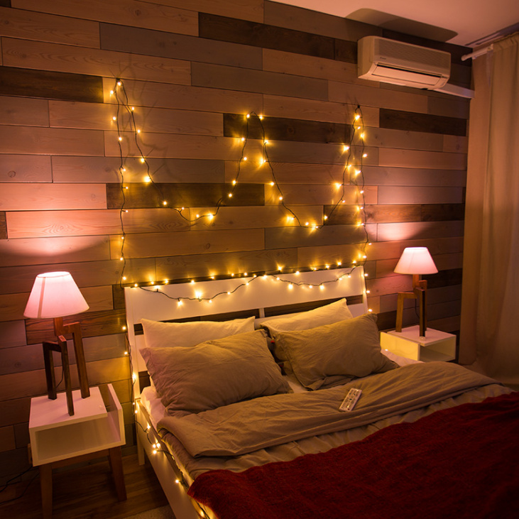
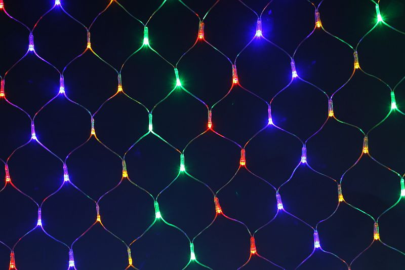
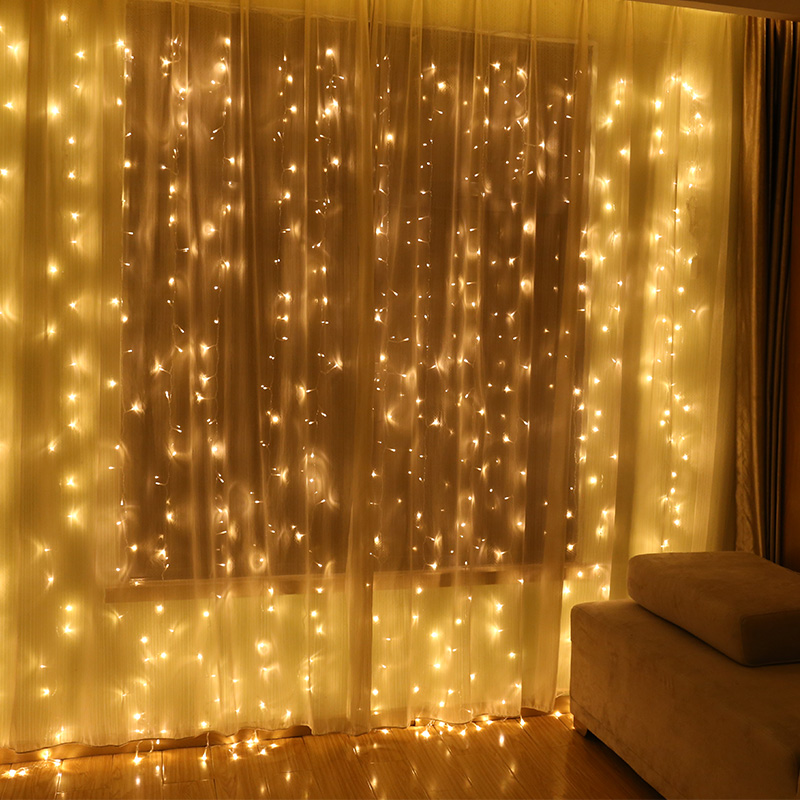
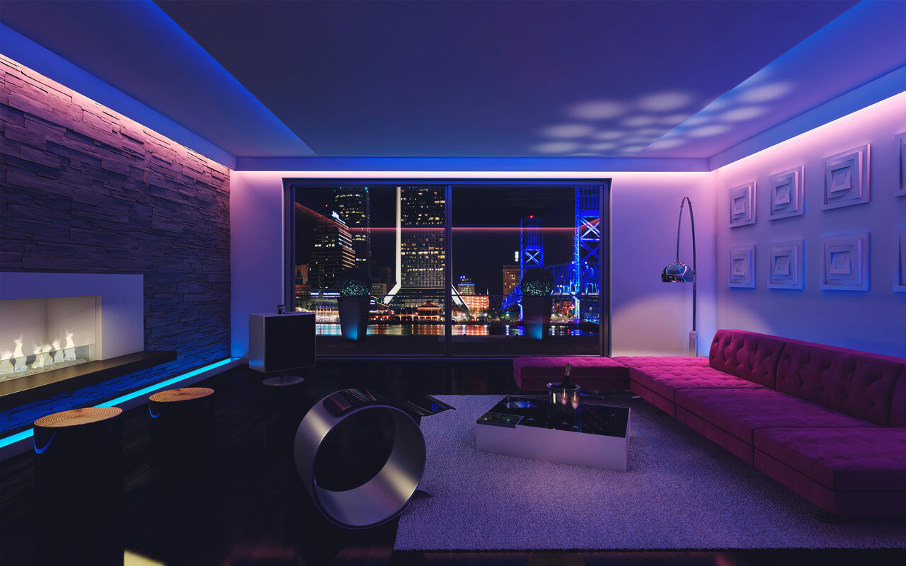

| Название | Изображение | Описание |
|---|---|---|
| Нить (Твинкл Лайт) |  | Лампочки размещаются в одной плоскости — вдоль шнура. Цвет и форма светодиодов варьируется. Украшение подходит для оформления новогодней елки, лестниц, мебели, окон, карнизов, дверных проемов. |
| Сеть (Нетлайт) |  | Гирлянда-сетка - это переплетение квадратов проводов со светодиодами на концах. Сеткой удобно оформлять ровные, плоские поверхности: стены, потолки, крыши, двери. Нетлайт используют круглый год, а не только в период новогодних праздников. Иллюминация привлекает внимание, поэтому фасады баров, кафетериев, ресторанов оформляют сияющей сеткой. |
| Занавес |  | Этот вид гирлянды прекрасно подойдет для внутренней стороны окна, как дополнение к шторам или в качестве самостоятельного украшения |
| Светодиодная лента |  | Это многофункциональный элемент. Первый вариант применения — создание праздничной обстановки в доме. Второй — использовать гирлянду как часть системы освещения, например, для подсветки натяжного потолка. |